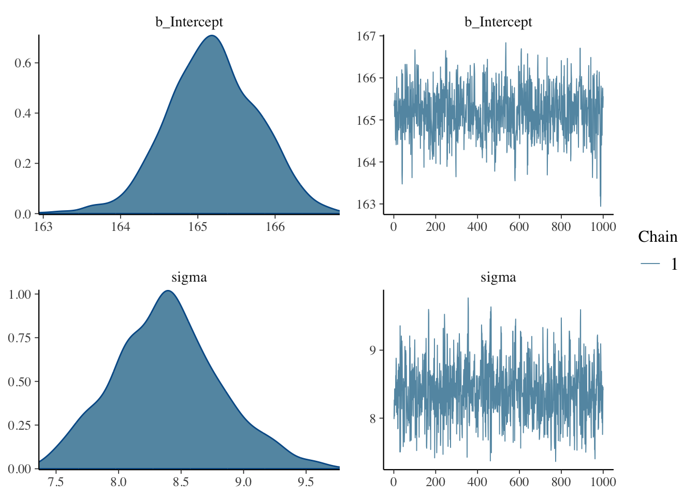

library(tidyverse)
set.seed(62854)
height <- tibble(
h = round(rnorm(200, 165, 8))
)Introduction to regression models (Part I)
Learn the basics of regression models, a powerful and flexible, yet simple, way of modelling data
1 Regression (to the mean)
Regression models (also called linear models or linear regression models) are a type of statistical model.
In the most general sense, regression models can be used to estimate the underlying process that generates some data. Somewhat more specifically, regression models use the given data to estimate the set of parameters of the equation that is believed to have generated the data.
The following formula illustrates the simplest regression model possible:
\[ y \sim Gaussian(\mu, \sigma) \]
\(y\) is the data
\(\sim\) means “is distributed according to”, or “is generated by”.
\(Gaussian(\mu, \sigma)\) is a Gaussian probability distribution with the parameters \(\mu\) ([mjuː], the mean) and \(\sigma\) ([ˈsɪgmə], the standard deviation).
2 Simulating Gaussian data
Let’s move onto an example of how we can use regression models to estimate the mean and standard deviation of data that is distributed according to a Gaussian probability distribution.
Alas, it is very difficult to find in nature data that is truly Gaussian, so we will simulate some.
To make things a little bit more worldly, we will simulate data of human adult height.
The code uses the rnorm() function which generates a random sample of values from a Gaussian distribution. The function takes three arguments:
- The number of values to sample, here 200.
- The mean of the Gaussian distribution, here 165.
- The standard deviation of the Gaussian distribution, here 8.
We use the round() function to round the values generated by rnorm() to the nearest integer.
The following plot shows the density curve of the simulated height data. The purple vertical line is the mean.
height |>
ggplot(aes(h)) +
geom_density(fill = "darkgreen", alpha = 0.2) +
geom_rug() +
geom_vline(aes(xintercept = mean(h)), colour = "purple", linewidth = 1)
3 Regression models in R
R offers several options for fitting regression models. In this course you will be introduced to a more modern and robust approach to regression modelling using the R package brms.
brms fits Bayesian regression models and it is a very flexible package that allows you to model a lot of different types of variables. You don’t really need to understand a lot of technical details to be able to effectively use the package and interpret the results, so in the course we will focus on how to use the package in the context of research, but if you are interested in the inner workings, feel free to read the documentation.
One useful thing to know is that brms is a bridge between R and the statistical programming software Stan. Stan is a powerful piece of software that can fit any type of Bayesian models, not only regression models. What brms does is that it allows you to write regression models in R, which are translated into Stan models and run with Stan under the hood.
You can safely use brms without learning Stan, but if you are interested in the computational aspects of Stan, you can check the Stan documentation.
The following sections will guide you through the steps to fit, interpret and plot your first Bayesian regression model!
4 Fitting a regression model with brms
The first thing to do is of course to attach the brms package.
library(brms)You can then fit a regression model with the brm() function, short for Bayesian Regression Model.
The minimal arguments you need are a model formula, a distribution family, and the data you want to fit the formula to.
h ~ 1andfamily = gaussiansimply tell brms to modelhwith a Gaussian distribution. This means that a mean and a standard deviation will be estimated from the data.- We specify the data with
data = height.
This model correspond to the following mathematical formula:
\[ \text{height} \sim Gaussian(\mu, \sigma) \]
The last argument you see in the code below, chain = 1, is related to the algorithm that Stan uses to fit the model and obtain estimates for the model’s parameters (in this model, these are the mean and the standard deviation of height). Stan uses the Markov Chain Monte Carlo (MCMC) algorithm. The algorithm is run by default four times; in technical terms, four MCMC chains are run. For this example we will just run one chain to speed things up, but in normal circumstance you would want to run four (you will learn how to run them in parallel in later tutorials).
If you want to learn more about the MCMC algorithm, check Finding posteriors through sampling by Elizabeth Pankratz and the resources linked there.
Now, here is the code to fit this model with brms. When you run the code, text will be printed in the R Console or below the code if you are using a Quarto document. You can find it below the code here too. The messages in the text are related to Stan and the MCMC algorithm. Compiling Stan program... tells you that brms is instructing Stan to compile the model specified in R, and Start sampling tells us that the MCMC algorith has started. The rest of the messages are about the MCMC chains themselves. Since we are only running one chain, you see info for that chain only.
h_1 <- brm(
h ~ 1,
family = gaussian,
data = height,
chain = 1
)Compiling Stan program...Trying to compile a simple C fileRunning /opt/homebrew/Cellar/r/4.4.0_1/lib/R/bin/R CMD SHLIB foo.c
using C compiler: ‘Apple clang version 16.0.0 (clang-1600.0.26.3)’
using SDK: ‘MacOSX15.0.sdk’
clang -I"/opt/homebrew/Cellar/r/4.4.0_1/lib/R/include" -DNDEBUG -I"/Users/ste/Library/Caches/org.R-project.R/R/renv/cache/v5/macos/R-4.4/aarch64-apple-darwin23.4.0/Rcpp/1.0.13/f27411eb6d9c3dada5edd444b8416675/Rcpp/include/" -I"/Users/ste/repos/qml/renv/library/macos/R-4.4/aarch64-apple-darwin23.4.0/RcppEigen/include/" -I"/Users/ste/repos/qml/renv/library/macos/R-4.4/aarch64-apple-darwin23.4.0/RcppEigen/include/unsupported" -I"/Users/ste/repos/qml/renv/library/macos/R-4.4/aarch64-apple-darwin23.4.0/BH/include" -I"/Users/ste/Library/Caches/org.R-project.R/R/renv/cache/v5/macos/R-4.4/aarch64-apple-darwin23.4.0/StanHeaders/2.32.10/c35dc5b81d7ffb1018aa090dff364ecb/StanHeaders/include/src/" -I"/Users/ste/Library/Caches/org.R-project.R/R/renv/cache/v5/macos/R-4.4/aarch64-apple-darwin23.4.0/StanHeaders/2.32.10/c35dc5b81d7ffb1018aa090dff364ecb/StanHeaders/include/" -I"/Users/ste/Library/Caches/org.R-project.R/R/renv/cache/v5/macos/R-4.4/aarch64-apple-darwin23.4.0/RcppParallel/5.1.9/f38a72a419b91faac0ce5d9eee04c120/RcppParallel/include/" -I"/Users/ste/Library/Caches/org.R-project.R/R/renv/cache/v5/macos/R-4.4/aarch64-apple-darwin23.4.0/rstan/2.32.6/8a5b5978f888a3477c116e0395d006f8/rstan/include" -DEIGEN_NO_DEBUG -DBOOST_DISABLE_ASSERTS -DBOOST_PENDING_INTEGER_LOG2_HPP -DSTAN_THREADS -DUSE_STANC3 -DSTRICT_R_HEADERS -DBOOST_PHOENIX_NO_VARIADIC_EXPRESSION -D_HAS_AUTO_PTR_ETC=0 -include '/Users/ste/Library/Caches/org.R-project.R/R/renv/cache/v5/macos/R-4.4/aarch64-apple-darwin23.4.0/StanHeaders/2.32.10/c35dc5b81d7ffb1018aa090dff364ecb/StanHeaders/include/stan/math/prim/fun/Eigen.hpp' -D_REENTRANT -DRCPP_PARALLEL_USE_TBB=1 -I/opt/homebrew/opt/gettext/include -I/opt/homebrew/opt/readline/include -I/opt/homebrew/opt/xz/include -I/opt/homebrew/include -fPIC -g -O2 -c foo.c -o foo.o
In file included from <built-in>:1:
In file included from /Users/ste/Library/Caches/org.R-project.R/R/renv/cache/v5/macos/R-4.4/aarch64-apple-darwin23.4.0/StanHeaders/2.32.10/c35dc5b81d7ffb1018aa090dff364ecb/StanHeaders/include/stan/math/prim/fun/Eigen.hpp:22:
In file included from /Users/ste/repos/qml/renv/library/macos/R-4.4/aarch64-apple-darwin23.4.0/RcppEigen/include/Eigen/Dense:1:
In file included from /Users/ste/repos/qml/renv/library/macos/R-4.4/aarch64-apple-darwin23.4.0/RcppEigen/include/Eigen/Core:19:
/Users/ste/repos/qml/renv/library/macos/R-4.4/aarch64-apple-darwin23.4.0/RcppEigen/include/Eigen/src/Core/util/Macros.h:679:10: fatal error: 'cmath' file not found
679 | #include <cmath>
| ^~~~~~~
1 error generated.
make: *** [foo.o] Error 1Start sampling
SAMPLING FOR MODEL 'anon_model' NOW (CHAIN 1).
Chain 1:
Chain 1: Gradient evaluation took 2.2e-05 seconds
Chain 1: 1000 transitions using 10 leapfrog steps per transition would take 0.22 seconds.
Chain 1: Adjust your expectations accordingly!
Chain 1:
Chain 1:
Chain 1: Iteration: 1 / 2000 [ 0%] (Warmup)
Chain 1: Iteration: 200 / 2000 [ 10%] (Warmup)
Chain 1: Iteration: 400 / 2000 [ 20%] (Warmup)
Chain 1: Iteration: 600 / 2000 [ 30%] (Warmup)
Chain 1: Iteration: 800 / 2000 [ 40%] (Warmup)
Chain 1: Iteration: 1000 / 2000 [ 50%] (Warmup)
Chain 1: Iteration: 1001 / 2000 [ 50%] (Sampling)
Chain 1: Iteration: 1200 / 2000 [ 60%] (Sampling)
Chain 1: Iteration: 1400 / 2000 [ 70%] (Sampling)
Chain 1: Iteration: 1600 / 2000 [ 80%] (Sampling)
Chain 1: Iteration: 1800 / 2000 [ 90%] (Sampling)
Chain 1: Iteration: 2000 / 2000 [100%] (Sampling)
Chain 1:
Chain 1: Elapsed Time: 0.024 seconds (Warm-up)
Chain 1: 0.019 seconds (Sampling)
Chain 1: 0.043 seconds (Total)
Chain 1: Fantastic! When the model has finished running, h_1 will have the model output for you to inspect.
5 Model summary
The natural way to inspect a model object like h_1, is to use the summary() function, which prints the model summary.
Let’s inspect the summary of the model now.
summary(h_1) Family: gaussian
Links: mu = identity; sigma = identity
Formula: h ~ 1
Data: height (Number of observations: 200)
Draws: 1 chains, each with iter = 2000; warmup = 1000; thin = 1;
total post-warmup draws = 1000
Regression Coefficients:
Estimate Est.Error l-95% CI u-95% CI Rhat Bulk_ESS Tail_ESS
Intercept 165.16 0.59 163.95 166.30 1.00 878 624
Further Distributional Parameters:
Estimate Est.Error l-95% CI u-95% CI Rhat Bulk_ESS Tail_ESS
sigma 8.38 0.42 7.58 9.26 1.00 780 636
Draws were sampled using sampling(NUTS). For each parameter, Bulk_ESS
and Tail_ESS are effective sample size measures, and Rhat is the potential
scale reduction factor on split chains (at convergence, Rhat = 1).Let’s break that down bit by bit:
The first few lines are a reminder of the model we fitted:
Familyis the chosen distribution for the outcome variable, a Gaussian distribution.Linkslists the link functions.Formulais the model formula.Datareports the name of the data and the number of observations.Finally,
Drawshas information about the MCMC draws.
Then, the
Regression Coefficientsare listed as a table. In this model we only have one regression coefficient,Interceptwhich corresponds to \(\mu\) from the formula above. You will learn more about theRegression Coefficientstable below.Then
Further distributional parametersare tabled. Here we only havesigmawhich is \(\sigma\) from the formula above. The table has the same columns as theRegression Coefficientstable.
6 Posterior probability distributions
The Regression Coefficients table is the most important part of the model summary, the part that gives you information on the estimates of the model parameters.
The main characteristics of Bayesian regressions is that they don’t just provide you with a single numeric estimate for the model parameters. Rather, the model estimates a full probability distribution for each parameter/coefficient. These probability distributions are called posterior probability distributions (or posteriors for short).
They are called posterior because they are derived from the data (and the prior probability distributions, you will learn more about these later).
The Regression Coefficients table reports a few summary measures of these posterior distributions. Here, we only have the summary measures of one posterior: the posterior of the model’s mean \(\mu\). The table also has three diagnostic measures, which you can ignore for now.
Here’s a break down of the table’s columns:
Estimate, the mean estimate of the coefficient (i.e. the mean of the posterior distribution of the coefficient).Est.error, the error of the mean estimate (i.e. the standard deviation of the posterior distribution of the coefficient).l-95% CIandu-95% CI, the lower and upper limits of the 95% Bayesian Credible Interval (more on these below).Rhat,Bulk_ESS,Tail_ESSare diagnostics of the MCMC chains.
7 Plotting the posterior distributions
While the model summary reports summaries of the posterior distributions, it is always helpful to plot the posteriors.
plot(h_1, combo = c("dens", "trace"))
The plot above shows the posterior distribution of the estimated coefficient b_Intercept and sigma, which correspond to the \(\mu\) and \(\sigma\) of the formula above, respectively.
For the b_Intercept coefficient, the posterior probability encompasses values between 163 and 167 cm, approximately. But some values are more probable then others: the values in the centre of the distribution have a higher probability density then the values on the sides. In other words, values around 165 cm are more probable than values below 164 and above 166, for example.
However, looking at a full probability distribution like that is not super straightforward. Credible Intervals (CrIs) help summarise the posterior distributions so that interpretation is more straightforward.
8 Interpreting Credible Intervals
The model summary reports the Bayesian Credible Intervals (CrIs) of the posterior distributions.
Another way of obtaining summaries of the coefficients is to use the posterior_summary() function. Ignore the last three lines.
posterior_summary(h_1) Estimate Est.Error Q2.5 Q97.5
b_Intercept 165.156753 0.58602651 163.951985 166.301666
sigma 8.377245 0.41649870 7.575665 9.255368
Intercept 165.156753 0.58602651 163.951985 166.301666
lprior -6.028051 0.06001757 -6.152499 -5.915154
lp__ -712.556900 1.03790698 -715.185680 -711.591604The 95% CrI of the b_Intercept is between 164 and 166. This means there is a 95% probability, or that we can be 95% confident, that the Intercept value is within that range.
For sigma, the 95% CrI is between 7.6 and 9.3. So, again, there is a 95% probability that the sigma value is between those values.
So, to summarise, a 95% CrI tells us that we can be 95% confident, or in other words that there is a 95% probability, that the value of the coefficient is between the values of the CrI.
Here you have the results from the regression model. Really, the results of the model are the full posterior probabilitis, but it makes things easier to focus on the CrI.
The model has “recovered” the values we used to simulate the height data quite well: above, we used a mean of 165 and a standard deviation of 8 to simulate data. The model is suggesting that the mean and SD of h is between 164-166 cm and 7-9 cm respectively: quite neat!
Regression models work.
9 Reporting
What about reporting the model in writing? We could report the model and the results like this.1
10 What’s next
In this post you have learnt the very basics of Bayesian regression models. As mentioned above, regression models with brms are very flexible and you can easily fit very complex models with a variety of distribution families (for a list, see ?brmsfamily; you can even define your own distributions!).
The perk of using brms is that you can just learn the basics of one package and one approach and use it to fit a large variety of regression models.
This is different from the standard frequentis approach, where different models require different packages or functions, with their different syntax and quirks.
In the folllowing posts, you will build your understanding of Bayesian regression models, which will enable you to approach even the most complex models! However, due to time limits you won’t learn everything there is to learn.
Developing conceptual and practical skills in quantitative methods is a long-term process and unfortunately one semester will not be enough. So be prepared to continue your learning journey for years to come!
Footnotes
To know how to add a citation for any R package, simply run
citation("package")in the R Console, where"package"is the package name between double quotes.↩︎